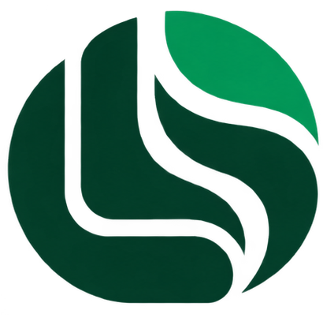

Not born finished.Built in layers.
I'm Amirhossein Hajilari — Lary. I build thoughtful digital experiences, untangle complex systems, and believe that every layer reveals a little more.

Ideas, brought to life.
A few of the problems I've spent time understanding — and the systems shaped around them.
Beyond theshell.
Growth isn't always about adding more. Sometimes, it's about shedding what no longer fits — and making room for what's already there.
We are the sum of the layers we've moved beyond — and the things we choose to create next.THE IDEA BEHIND LARYSPACE
Curiosity
Ask one more question. Look beneath the obvious.
Craft
Make the invisible engineering feel effortless.
Integrity
Build deliberately, and make every decision count.
Tools with a purpose.
Technology matters when it helps solve the right problem. These are the languages and frameworks I reach for.
I like to work across the boundaries between interfaces, APIs, workflows, and data.
A differentfrequency.
There's more to a person than their work. Here's a small window into the sounds that travel with me.
THE SOUNDTRACK TO MY SPACEThe playlist is taking shape.
A SoundCloud track or playlist can be connected here without changing the design.
SOMETHING IS COMING TO LIFELet's makesomething matter.
A new idea, a difficult problem, or just a good conversation — my inbox is open.